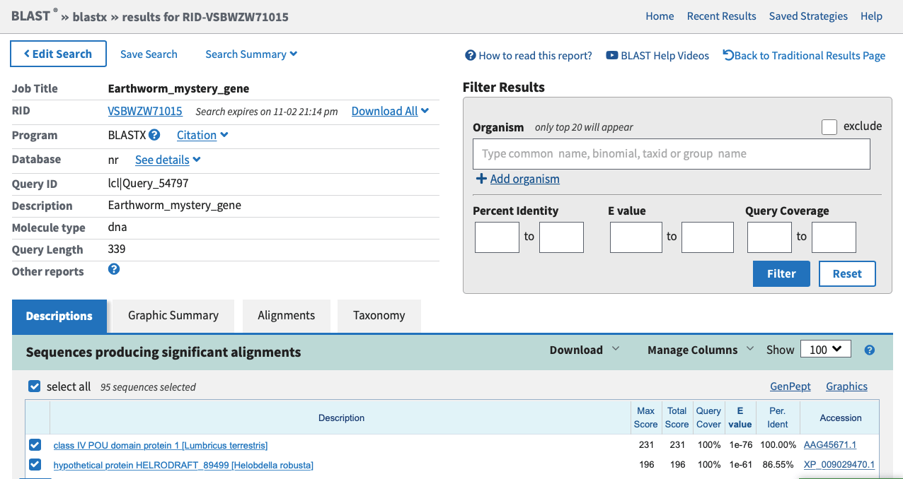

Lesson 4: Finding Homologous Genes with BLAST¶
© David Gold. Except where the source is noted, this work is licensed under a Creative Commons Attribution License CC-BY 4.0.
Check for any changes in the course material on GitHub:
git fetch upstream
git checkout master
git merge upstream/master
4.0. What are homologous genes?¶
In comparative genomics, our goal is to understand the evolution and function of genes (as well as other genetic elements). To compare genes between individuals or species, we need to indetify homologous bits of DNA. Homologous DNA is DNA that is conserved between to organisms because it was present in their last common ancestor.
We can identify homologous DNA between organisms based on how similar their DNA or amino acid (if we are working with proteins) sequences are. While similarities between DNA can be expressed as a percentage (a gene between humans and mice might be 78% similar in its DNA sequences) homology is binary; genes either are or are not derived from an ancestral sequence.
4.1. Identifying homologous genes with the BLAST web server¶
To perform this exercise, we’re going to use the National Center for Biotechnology Information (NCBI). This is a public database with nearly all of the genetic material scientists have sequenced and published.
In particular, we’re going to use a program on NCBI called BLAST (Basic Local Alignment Search Tool). BLAST takes a query sequence that you provide, and compares it against all sequences in the NCBI database. It looks for similar sequences that might be homologous.
There are four different versions of BLAST, depending on what you want to use for the query and the database. Keep in mind that to compare DNA to proteins, the DNA first has to be translated into amino acids:
Nucleotide BLAST (blastn): compares a DNA query to a DNA database
Protein BLAST (blastp): compares a protein query to a protein database
blastx: compares a translated DNA query to a protein database
tblastn: compares a protein query to a translated DNA database
tblastx: compares a translated DNA query to a translated DNA database
The program you want to use depends on what you’re trying to accomplish. If you want to find homologous sequences from closely related species (or individuals within a species), you’re probably interested in comparing DNA. If you want to find homologous sequences from distantly related species, you’re probably interested in comparing proteins (since many synonymous DNA triplets code for the same amino acid, DNA tends to evolve faster than proteins, making it harder to compare across distantly related life forms).
Let’s test it out! Here is a DNA sequence from an earthworm (Lumbricus terrestris). This is in a format called the FASTA format. The first line (starting with a “>” symbol) describes the sequence. The other lines contain the DNA code:
>Earthworm_mystery_gene
TCCGCCCTTGGTAAGCTGAAGATCCCGGGGGTTGGATCCCTCAGTCAGAGCACGATCTGTCGATTCGAATCGCTCACCC
TCAGCCACAACAACATGGTGGCGCTAAAGCCCGTCCTCCAGGCGTGGCTCGAGGAGGCGGAGAAGTCCCGGATGGAGAA
CCGGTTGCGGAACGAGCTGTTCAACGGAACTGGTCCCGGCGGAGACAAGAAGCGGAAGCGGACGTCGATCGCCGCCCCT
GAGAAGCGATCCCTCGAGGCCTACTTCGCCATCCAGCCGCGTCCGTCGGGCGAGAAGATCGCGCAGATCGCCGACAAAC
TCGATCTGAAGAAGAACGTCGTT
We want to compare this sequence to distantly related animals, so we should compare this earthworm query sequence against a protein database. I would therefore recommend using blastx.
Take this sequence and submit it to BLAST. Pick blastx and you should see a page like this:
The first heading: Enter Query Sequence is where you provide the query sequence. Copy the earthworm sequence provided earlier and paste it into this box. The second heading” Choose Search Set tells BLAST whether you want to search the whole NCBI database, or just a subset of it. For now, let’s leave all of these other parameters empty. Hit the “BLAST” button at the bottom of the screen and let’s see what we find!
It might take a few minutes for BLAST to finish running, so be patient. BLAST is comparing your query sequence to ~209 million other sequences in the NCBI database! but in the end you’ll come to a page like this:
The Descriptions tab lists the results of the BLAST search from best match to worst. The features used to determine the best match are described in the Query Cover column (how much of the query is covered by the database match), and the Per. Ident (percent identity) column (how similar are the query and match sequences). Query Cover and Per. Ident are used to calculate the E Value, which is the likelihood that the query and match look similar by chance (in other words, the probability that they are not homologous). An e-value cutoff of 10e-5 is often used to determine whether genes are homologous or not, but to know for sure a scientist has to do lots of additional, careful study.
The first hit has 100% “Query cover” and 100% “Ident”, meaning it’s identical to the sequence we submitted. According to the E-value, the probability that these two sequences match perfectly by chance is 1-76 (that is pretty unlikely). In other words, our query is a perfect match to the “class IV POU domain” protein in the earthworm (Lumbricus terrestris). We’ve identified the mystery gene!
In addition to this best hit, we can look at other similar genes from other organisms. The next best hit comes from Helobdella robusta. Do you know what kind of organism that is? If not, try searching the name in Google. Does it make sense that our gene from Lumbricus is very similar to a gene from Helobdella? Check out some of the other species on the list. If you don’t recognize the name, search for it online. These are homologous genes from all sorts of different animals.
The BLAST website has many other powerful features. You should play around with the different tabs and options to better understand it. But this covers the minimum information we need to perform BLAST on our local computers.
4.2. Identifying homologous genes using BLAST on a local machine¶
What if you want to use a custom database that is not available on NCBI? Or what if you want to build BLAST searches into a computer program that you are writing? Fortunately, you can download and run BLAST on your personal computer for custom BLAST analyses.
To start, use Homebrew to download BLAST:
brew install blast
You can now call the five different BLAST algorithms by using their names: blastn, blastp, blastx, tblastn, and tblastx.
4.2.1. Preparing query and database text files¶
For this exercise I have prepared query and database sequences for you. They are provided in the Additional Materials folder of the Gold_Lab_Training GitHub repository. Go to the local directory in Terminal and check out the files:
cd ~/git/Gold_Lab_Training/Additional_Materials/
ls
Among other things, you should see the following:
Lesson_4_Query_Sequences.fasta
Lesson_4_Yeast_Proteome.fasta
Our database is going be a proteome (all the proteins in a genome) for brewer’s yeast (Saccharomyces cerevisiae), a common laboratory model organism. We also have a set of query sequences.
These files are not big, but some FASTA files can be hundreds or thousands of megabytes in size! You will not be able to look at the largest FASTA files using a text editor. We can get a peek at the content of these files using the head command:
head -n 100 Lesson_4_Query_Sequences.fasta
We get this in return:
>CBN76684.1 Sterol methyltransferase [Ectocarpus siliculosus]
MATTLALCVVSSAVLYAQLKDKPLDSVLESPLDQPPLVLANAALTLACSTLVVLKHEVFCRLVYATDPLE
VTWTFIRGFFGQEKGRGIKVDSWITEYNRLHDDNESSVEEREGSYAKLVNAYYELATLFYEWGWGSSFHF
ASRWRNESFQDSIKRHEYYLGGRLGVSRGAKVLDCGCGIGGPYRNIAQFTGADITGITINEYQVKRGNEV
NKNMGVDQQCRSIQGDFMKLPFEDNSFDGVYAIEATCHAPQREGVYSEIYRVLKPGCVFACYEWCLTDKF
DASNDKHRLIKKQIEEGDGLPDMITPPEVDSALKASGFEILETRDAALDPNPGGIPWYQPLTPSWNVFTQ
RFQFNWLGMRLTKAALYVMEMFYLAPAGTNKVQAMLQAGGMGCAQGGLTGTFTPMYLAVCRKPL
>AAA39883.1 p53 [Mus musculus]
MTAMEESQSDISLELPLSQETFSGLWKLLPPEDILPSPHCMDDLLLPQDVEEFFEGPSEALRVSGAPAAQ
DPVTETPGPVAPAPATPWPLSSFVPSQKTYQGNYGFHLGFLQSGTAKSVMCTYSPPLNKLFFQLAKTCPV
QLWVSATPPAGSRVRAMAIYKKSQHMTEVVRRCPHHERCSDGDGLAPPQHLIRVEGNLYPEYLEDRQTFR
HSVVVPYEPPEAGSEYTTIHYKYMCNSSCMGGMNRRPILTIITLEDSSGNLLGRDSFEVRVCACPGRDRR
TEEENFRKKEVLCPELPPGSAKRALPTCTSASPPQKKKPLDGEYFTLKIRGRKRFEMFRELNEALELKDA
The head command returned less than 100 lines, which means we are looking at the whole file. There are only two query sequences:
A sterol methyltransferase gene from the brown alga Ectocarpus
A p53 gene from the mouse Mus
Our files are not very big, so let’s start by opening the folder containing the files so that we can look at them in BBEdit:
open .
Open the two files in BBEdit. The format is standard output for fasta sequences from NCBI. There are two things I don’t like about this format:
Firstly, there are spaces. White spaces are problematic for coding because they have meaning. That is why all of the files and folders we use separate words with underscores (
_).Secondly, I don’t like how the species names are at the end of the sequence name. When we reconstruct gene alignments or evolutionary trees (which we’ll do in future lessons) we often only see the first part of the sequence name in our output. The NCBI reference ID (the list of letters and numbers at the start of each sequence name) is not very informative in these cases.
In BBEdit use the find function (Search / Find... in the menu or hit the command + f keys) and make the following changes:
Find:
(this doesn’t look like anything, but it’s actually a space)
Replace:
_
Find:
(>)(.*)(\\[)(.*)(\\])
Replace:
\1\4_\2
What if your fasta file is too big to edit in a text editor? An easy way to replace spaces is with sed, the stream editor. Sed can perform basic text transformations on a file, and is much more memory efficient than other text editors. The find and replace function in sed follows this basic pattern:
Blue boxes (alert-info)
So to replace spaces with underscores, you could type the following into Terminal:
sed 's/ /_/g' Lesson_4_Query_Sequences.fasta > Lesson_4_Query_Sequences.modified.fasta
4.2.2. Build the database¶
Now that our text files are formatted the way we like, we need to format “database” sequences into a proper BLAST database. We do this with the program makeblastdb, which is included in your version of blast. There are several important flags we need to specify for the program to work:
-in: the input fasta file-dbtype: specify whether the data represents DNA (nucl) or protein (prot) sequences.-out: what we want the database to be called
makeblastdb -in Lesson_4_Yeast_Proteome.fasta -dbtype prot -out Yeast
We are now ready to BLAST! We have a protein query and a protein database, so we will be using blastx. Again, there are several important flags we need to call:
-query: the query fasta file-db: the name of the database-evalue: the e-vlaue cutoff we want to use (generally set to 10e-5)-outfmt: the standard output is visually interesting but hard to work with; we use a different, tab-delimited format-out: the name of the results file-max_target_seqs(optional) : how many matches do you want to get for each query?
blastp -query Lesson_4_Query_Sequences.fasta -db Yeast -evalue 10e-5 -outfmt 6 -out Lesson_4_Results.txt
While the -outfmt 6 option provides an easy to use, tab-delimited format to the data (in other words, it formats the data into rows and columns that could be read by a spreadsheet program like Microsoft Excel). Unfortunately, the output does not provide information on what each column signifies. You can add this information by using the following command:
echo -e "qseqid\tsseqid\tpident\tlength\tmismatch\tgapopen\tqstart\tqend\tsstart\tsend\tevalue\tbitscore"|cat \
- Lesson_4_Results.txt > /tmp/out && mv /tmp/out Lesson_4_Results.txt
Let’s look at the results using head:
head Lesson_4_Results.txt
Terminal should return the following:
qseqid sseqid pident length mismatch gapopen qstart qend sstart send evalue bitscore
Ectocarpus_siliculosus_CBN76684.1_Sterol_methyltransferase sp|P25087|ERG6_YEAST_Sterol_24-C-methyltransferase 43.296 358 182 3 75 413 13 368 2.78e-100 301
It might be easier for you to interpret the results if they are formatted as a table (you can also do this by copying and pasting the results into a spreadsheet):
qseqid |
sseqid |
pident |
length |
mismatch |
gapopen |
qstart |
qend |
sstart |
send |
evalue |
bitscore |
|---|---|---|---|---|---|---|---|---|---|---|---|
Ectocarpus_siliculosus_CBN76684.1_Sterol_methyltransferase |
sp|P25087|ERG6_YEAST_Sterol_24-C-methyltransferase |
43.296 |
358 |
182 |
3 |
75 |
413 |
13 |
368 |
2.78e-100 |
301 |
This is what the header IDs mean:
Column header |
Meaning |
|---|---|
qseqid |
query (e.g., gene) sequence id |
sseqid |
subject (e.g., reference genome) sequence id |
pident |
percentage of identical matches |
length |
alignment length |
mismatch |
number of mismatches |
gapopen |
number of gap openings |
qstart |
start of alignment in query |
qend |
end of alignment in query |
sstart |
start of alignment in subject |
send |
end of alignment in subject |
evalue |
expect value |
bitscore |
bit score |
This is the result of our BLAST search! One of our query sequences (Mus_musculus_AAA39883.1_p53) had no matches to the yeast database. Our other query (Ectocarpus_siliculosus_CBN76684.1_Sterol_methyltransferase) had a single hit in the yeast database (sp|P25087|ERG6_YEAST_Sterol_24-C-methyltransferase). The two proteins are ~43% identical (the “pident” column) with an e-value score of 2.78e-100. These genes are probably homologs of each other!
4.3. Upload changes to your GitHub repository¶
Don’t forget to upload the changes you made to your forked GitHub account:
cd ../ git add –all git commit -m ‘performed blast exercise’ git push